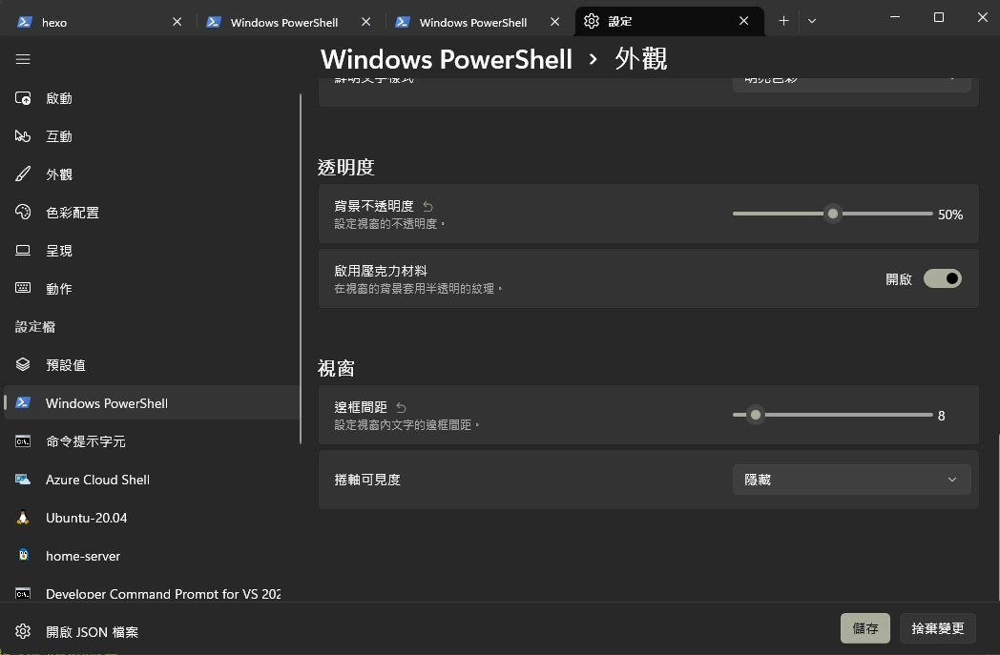
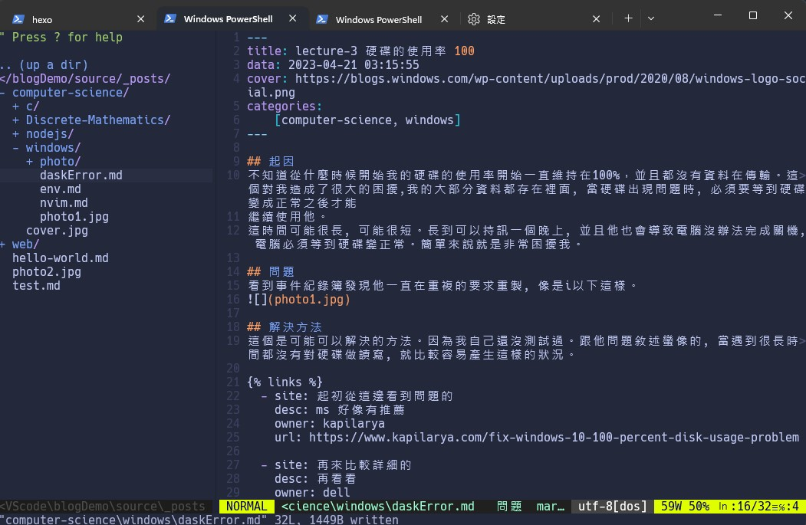

# 緣由
看到這篇你可能會懷疑為什麼 nvim 是寫在 windows 的分類裡面。
別問哪麼多，因為我是在 window 裡面裝的當然…。
對我來說 neovim 絕對比 vscode 香太多了，撇開套件非堂多之外。能用純鍵盤打字是吸引的。
# 什麼是 vim, 以及什麼是 neovim
vim 是款編輯器，對於普通的使用者來說有點類似 vscode, 但他是純命令控制的方式。
而 neovim 是基於 vim 的部分改進，而兩個是不同的作者在維護的。具體可以看參考資料
而 vim 的學習成本很高，但相比 vscode 雖然沒有那麼方便，但她擁有的東西是非常多的。
# neovim 的安裝
-
neovim 安裝
-
設定檔案。neovim 的精華在於它的設定檔案部分。
在 windows 底下 neovim 的路徑在…
~/AppData/Local/nvim/init.vim |
init.vim 是關於 neovim 的所有設定部分，之後的設定都是為繞著這個設定檔案.
.vim 是一個 vimscript 的類型，但他也可以用 lua 的語言來描述。
- 以下是我的設定檔案。
set number | |
set t_Co=256 | |
let g:indent_guides_guide_size = 1 | |
let g:indent_guides_start_level = 2 | |
syntax on | |
"tab-settings | |
set list listchars=tab:»·,trail:· | |
nnoremap <Tab> >> | |
nnoremap <S-Tab> << | |
inoremap <S-Tab> <C-d> | |
set tabstop=4 | |
set shiftwidth=4 | |
set shiftround | |
set expandtab | |
" set shell=C:\\Users\\adven\\AppData\\Roaming\\Microsoft\\Windows\\Start\ Menu\\Programs\\Windows\ PowerShell\\Windows\ PowerShell.lnk | |
set shell=powershell | |
set shellcmdflag=-command | |
set shellquote=\" | |
set shellxquote= | |
"install | |
call plug#begin() | |
Plug 'lazywei/vim-doc-tw' | |
Plug 'Yggdroot/indentLine' | |
Plug 'vim-airline/vim-airline' | |
Plug 'vim-airline/vim-airline-themes' | |
Plug 'preservim/nerdcommenter' | |
filetype plugin on | |
Plug 'luochen1990/rainbow' | |
Plug 'preservim/nerdtree' | |
Plug 'honza/vim-snippets' | |
Plug 'octol/vim-cpp-enhanced-highlight' | |
Plug 'iamcco/markdown-preview.nvim', { 'do': { -> mkdp#util#install() }, 'for': ['markdown', 'vim-plug']} | |
Plug 'neoclide/coc.nvim', {'branch': 'release'} | |
Plug 'majutsushi/tagbar' | |
Plug 'akinsho/toggleterm.nvim', {'tag' : '*'} | |
Plug 'folke/tokyonight.nvim', { 'branch': 'main' } | |
Plug 'windwp/nvim-autopairs' | |
call plug#end() | |
" lua << EOF | |
lua require("nvim-autopairs").setup {} | |
" EOF | |
" colorsheme | |
colorscheme tokyonight | |
" Terminal | |
autocmd TermEnter term://*toggleterm#* | |
\ tnoremap <silent><c-t> <Cmd>exe v:count1 . "ToggleTerm"<CR> | |
" By applying the mappings this way you can pass a count to your | |
" mapping to open a specific window. | |
" For example: 2<C-t> will open terminal 2 | |
nnoremap <silent><c-t> <Cmd>exe v:count1 . "ToggleTerm"<CR> | |
inoremap <silent><c-t> <Esc><Cmd>exe v:count1 . "ToggleTerm"<CR> | |
" lua require("toggleterm").setup({ size=20 }) | |
source C:\Users\adven\AppData\Local\nvim\lua\toggleterm1.lua | |
" By applying the mappings this way you can pass a count to your | |
" mapping to open a specific window. | |
" For example: 2<C-t> will open terminal 2 | |
nnoremap <silent><c-t> <Cmd>exe v:count1 . "ToggleTerm"<CR> | |
inoremap <silent><c-t> <Esc><Cmd>exe v:count1 . "ToggleTerm"<CR> | |
"coc | |
set updatetime=300 | |
"suggest.noselect": true | |
inoremap <silent><expr> <TAB> | |
\ coc#pum#visible() ? coc#pum#next(1) : | |
\ CheckBackspace() ? "\<Tab>" : | |
\ coc#refresh() | |
inoremap <expr><S-TAB> coc#pum#visible() ? coc#pum#prev(1) : "\<C-h>" | |
" Make <CR> to accept selected completion item or notify coc.nvim to format | |
" <C-g>u breaks current undo, please make your own choice | |
inoremap <silent><expr> <CR> coc#pum#visible() ? coc#pum#confirm() | |
\: "\<C-g>u\<CR>\<c-r>=coc#on_enter()\<CR>" | |
inoremap <silent><expr> <c-space> coc#refresh() | |
function! CheckBackspace() abort | |
let col = col('.') - 1 | |
return !col || getline('.')[col - 1] =~# '\s' | |
endfunction | |
inoremap <expr> <cr> pumvisible() ? "\<C-y>" : "\<C-g>u\<CR>" | |
set autoindent | |
let g:coc_global_extensions=[ | |
\ 'coc-clangd', | |
\ ] | |
"markdown | |
nmap <C-s> <Plug>MarkdownPreview | |
nmap <M-s> <Plug>MarkdownPreviewStop | |
nmap <C-p> <Plug>MarkdownPreviewToggle | |
let g:mkdp_auto_start = 0 | |
" 註解 | |
let g:NERDCreateDefaultMappings = 1 | |
let g:NERDSpaceDelims = 1 | |
let g:NERDCustomDelimiters = { 'c': { 'left': '/**','right': '*/' } } | |
" NERDtree | |
autocmd vimenter * NERDTree | |
autocmd bufenter * if (winnr("$") == 1 && exists("b:NERDTree") && b:NERDTree.isTabTree()) | q | endif | |
let g:NERDTreeDirArrowExpandable = '+' | |
let g:NERDTreeDirArrowCollapsible = '-' | |
nnoremap <leader>n :NERDTreeFocus<CR> | |
nnoremap <C-n> :NERDTree<CR> | |
nnoremap <C-j> :NERDTreeToggle<CR> | |
nnoremap <C-f> :NERDTreeFind<CR> | |
" nnoremap <F3> :NERDTreeToggle<CR> | |
autocmd StdinReadPre * let s:std_in=1 | |
autocmd VimEnter * NERDTree | if argc() > 0 || exists("s:std_in") | wincmd p | endif | |
" c/c++ 結構顯示器 | |
let g:tagbar_width=30 | |
nnoremap <silent> <F4> :TagbarToggle<CR> |
這裡就不解釋具體含意。但如果要安裝套件時，必須先存檔後離開檔案，再次進入後要輸入 :PlugInstall , 等待安裝完成就可以開始設定了。
喔對了，如果你使用的 microsoft terminal 會發現怎麼套用 colorscheme 的畫面不對稱
這個要進入設定去調整。

把視窗間距調整成 0% 就可以了。
# 設定說明
neovim 可以整合非常多的套件例如…
-
coc.vim
透過跟 lsp 溝通可以做語法補充的功能
-
toggle 之類的
顯示目錄區跟程式區的介面顯示套件
這邊有大部分 plugin 的 wiki，透過說明就可以安裝完成。
設定完成畫面長成這樣。

# vim 的操作說明
一開始我們進入的模式稱為 normal, 大部分的模式都是從 normal 開始進入。
vim 有四種模式：命令模式 (Command mode), 插入模式 (insert mode), 底線命令模式 (last line mode), 視覺命令模式 (visual mode)
-
命令模式
指令 說明 i 插入模式，可以輸入文字 : 底線命令模式，一些關於 vim 的命令在此輸入 v 視覺模式，可以使用滑鼠游標選擇文字 x 刪除游標的字元 -
插入模式
指令 說明 enter 換行 back space 刪除游標前一個字元 del 刪除游標後一個字元 page up 上一頁 page down 下一頁 -
底線命令模式 (我都把稱為正常模式 normal mode
指令 說明 :w 存檔案 :q 離開檔案 :wq 當打完檔案後，要先存檔案再離開，所以:qw 的語法是不合理的 :!w 強制存檔 :q! 不儲存直接離開 :!wq 強制存當並離開 esc 離開當前的模式 :0 移動到文件檔案的起點 : 移動到第 行 :$移動到最後一行 j 往下一行 k 往上一行 :dd 刪除本行 yy 複製本行 p 貼到本行的下方 P 貼到本行的上方 u 恢復之前的修改
# nvim-tree
| 指令 | 說明 |
|---|---|
| Rename file | |
| Open: New Tab | |
| Open: Horizontal Split | |
| Open Preview | |
| a | create |
| c | Copy |
| d | Delete |
| p | Paste |
| P | Parent Directory |
| q | Close |
| r | Rename |
| x | cut |
操作方式
# bufferline
| 指令 | 說明 |
|---|---|
| :bw | beffer write |
| :bd | beffer Delete |
# 參考資料
neovim & vim 的歷史
指令
裡面有關於vim 的設定參考。